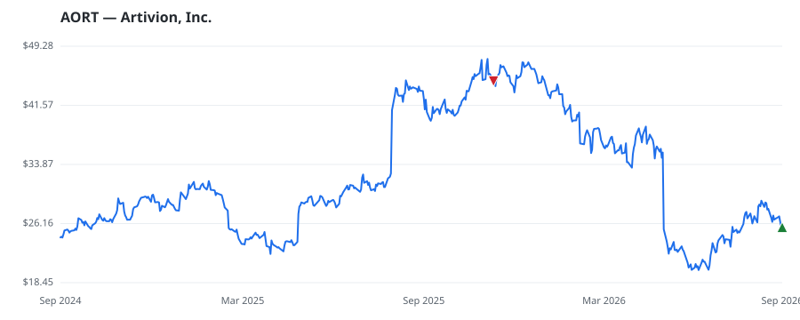

bullish · bearish · n/a — dots: price>SMA10 · SMA10>SMA50 · SMA50>SMA200 · up>down volume (20d)
Health Care Equipment & Services · small cap
Members who bought AORT earned a dollar-weighted -1.7% from their disclosure dates, versus -0.6% for the S&P 500 over the same holding windows (-1.1% alpha).

▲ green = a disclosed purchase · ▼ red = a disclosed sale (plotted on disclosure date)
Artivion Inc offers cardiac and vascular surgeons a suite of aortic-centric solutions. The company's products include Aortic Heart Valve, Mitral Heart Valve, Aortic Allograft, Pulmonary Human Heart Valve, Pulmonary Patch, and Surgical Adhesive among others. The company's has two reportable segments: Medical Devices and Preservation Services. The Medical Devices segment includes revenues from sales of aortic stent grafts, surgical sealants, On-X products, and other product revenues. The Preservation Services segment includes services revenues from the preservation of cardiac and vascular implan SURGICAL & MEDICAL INSTRUMENTS & APPARATUS · website
| Revenue | $441.3M | Net income | $9.8M |
|---|---|---|---|
| Operating income | $33.7M | Diluted EPS | $0.21 |
| Assets | $884.8M | Equity | $448.2M |
| Member | Chamber | Out-performer | Disclosed buys $ | Return on buys |
|---|---|---|---|---|
| Gilbert Cisneros | house | — | $8K | -1.7% |
Disclosed $ figures are bracket midpoints — filings report ranges (e.g. $1,001–$15,000), not exact amounts.
This name produced 0.0% of the ranked funds’ total alpha.
| Fund | Fund alpha vs SPY | Position | % of book |
|---|---|---|---|
| Ophir Asset Management Pty Ltd | +49% | $40M | 3.3% |
Hedge data: SEC EDGAR 13F · ranked funds beat SPY in >50% of their quarters · fund alpha = mirror-portfolio return minus SPY.